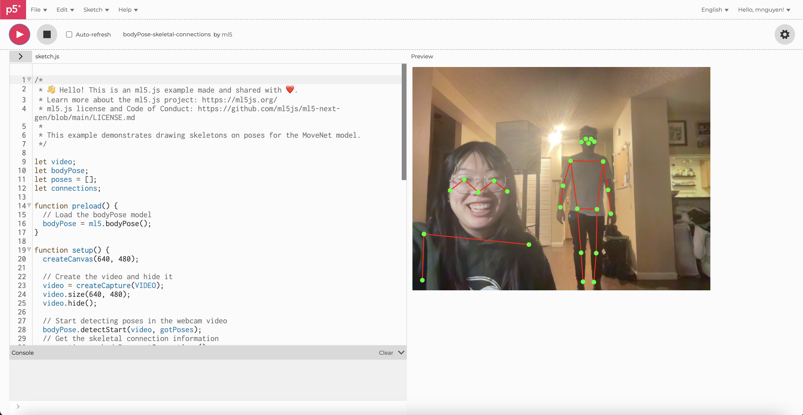

Finding & Refining Your Interface
Concept
The interface I wanted to create was a simple figure drawing model that would plot out the general skeleton of a body based on webcam video. The interface would allow you to capture an image by pinching your index finger and thumb together of a pose you made and set it on a blank background in order to show you a skeleton to use as reference to use for figure drawing sketches.
Process
I started off this project by exploring the BodyPose reference in ml5.js since this was going to be the foundation of my project.